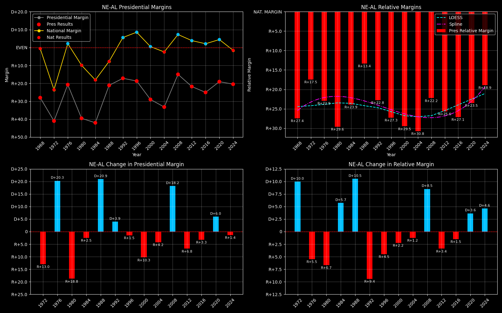

← Back to Map

Nebraska statewide (AL)
Nebraska (NE-AL) — Data
| Year | D | R | Margin | Relative Margin | Nat'l Margin | Margin Δ | Relative Margin Δ | Nat'l Margin Δ |
|---|
| 1976 | 233287 | 359219 | R+21.3 | R+23.5 | D+2.3 | 0 | 0 | 0 |
| 1980 | 166424 | 419214 | R+43.2 | R+32.8 | R+10.3 | R+21.9 | R+9.3 | R+12.6 |
| 1984 | 187866 | 460054 | R+42.0 | R+23.8 | R+18.2 | D+1.2 | D+9.1 | R+7.9 |
| 1988 | 259235 | 397956 | R+21.1 | R+13.4 | R+7.7 | D+20.9 | D+10.3 | D+10.6 |
| 1992 | 217344 | 344346 | R+22.6 | R+29.9 | D+7.2 | R+1.5 | R+16.4 | D+14.9 |
| 1996 | 236761 | 363467 | R+21.1 | R+30.7 | D+9.6 | D+1.5 | R+0.9 | D+2.4 |
| 2000 | 231780 | 433862 | R+30.4 | R+30.9 | D+0.5 | R+9.2 | R+0.2 | R+9.1 |
| 2004 | 254328 | 512814 | R+33.7 | R+31.2 | R+2.5 | R+3.3 | R+0.4 | R+3.0 |
| 2008 | 333319 | 452979 | R+15.2 | R+22.8 | D+7.5 | D+18.5 | D+8.5 | D+10.0 |
| 2012 | 302081 | 475064 | R+22.3 | R+26.3 | D+4.0 | R+7.0 | R+3.5 | R+3.5 |
| 2016 | 284446 | 495847 | R+27.1 | R+29.4 | D+2.3 | R+4.8 | R+3.1 | R+1.7 |
| 2020 | 374583 | 556846 | R+19.6 | R+24.1 | D+4.5 | D+7.5 | D+5.3 | D+2.2 |
| 2024 | 369995 | 564816 | R+20.8 | R+19.3 | R+1.5 | R+1.3 | D+4.8 | R+6.0 |